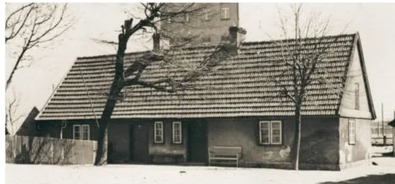
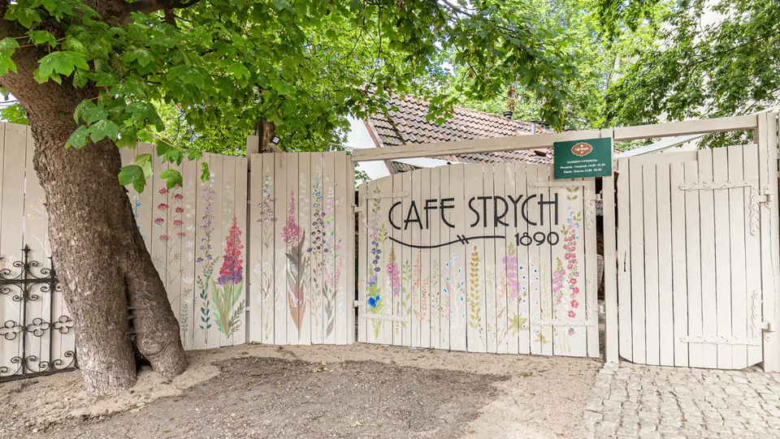
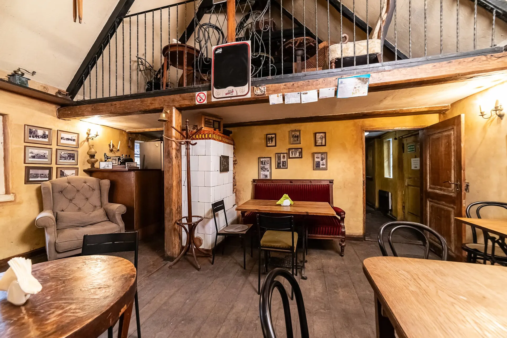
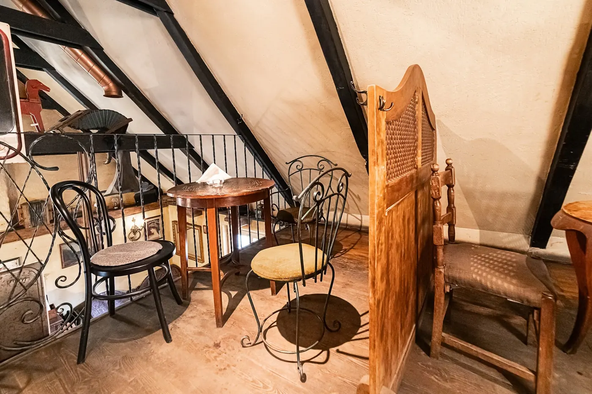
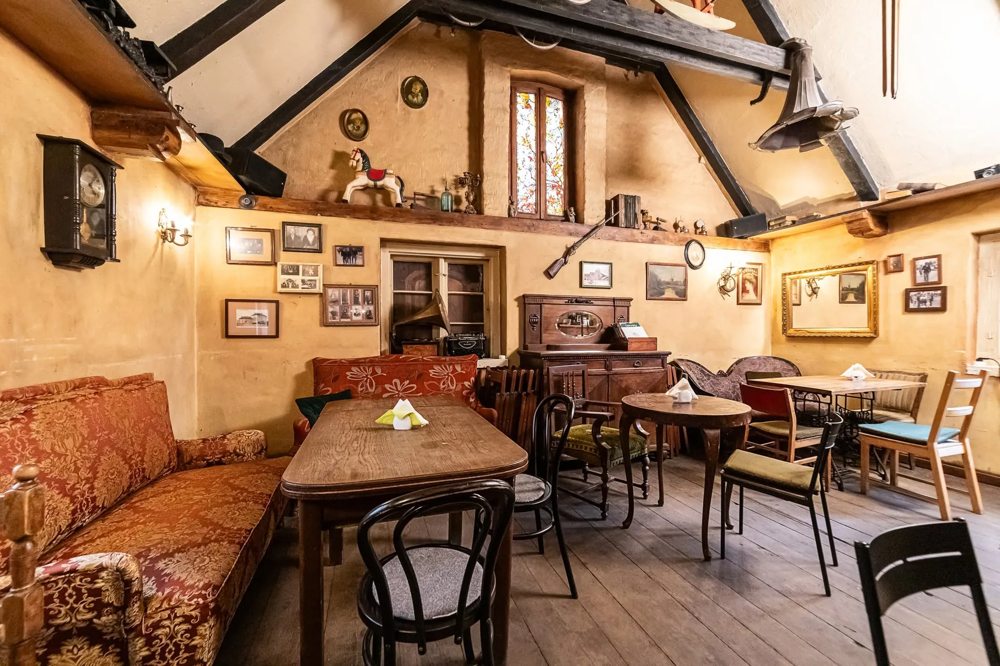
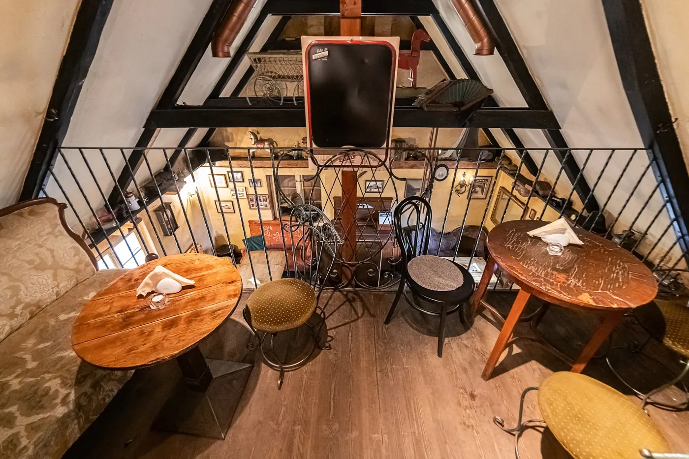

Cafe Strych
kawiarnia, bar i pub w najstarszym domu Gdyni
Chata rybacka z 1890 roku, piec z białych kafli, skrzypiące deski i muzyka na żywo w środy. Wpadnij na kawę z kawiarki – zostań na wieczór.
Co słychać na Strychu
Koncerty, wieczorki poetyckie, nowości w karcie – prosto od nas.


rybacka
Witamy w starej chacie rybackiej
To najstarszy budynek mieszkalny w Gdyni. Postawiono go w 1890 roku, gdy Gdynia była jeszcze wsią rybacką – chata stała wtedy przy samym brzegu, na plaży leżały łodzie, a na wietrze suszyły się sieci.
Budynek zachował pierwotną bryłę. Przetrwała oryginalna stolarka okienna i drzwi frontowych, podłogi z desek, stropy belkowe oraz piec z białych kafli. Od lat to miejsce wieczorków poetyckich i koncertów na żywo – i po prostu dobry adres, żeby uciec od miejskiego zgiełku.
- 1890Chata powstaje dla rybaka Pawła Skotze i jego żony Rozalii. We wsi mieszka ok. 900 osób w stu domach.
- 1959Po trzech pokoleniach tej samej rodziny budynek trafia pod opiekę miasta Gdyni.
- 1999Otwiera się Cafe Strych – na początku w połowie budynku.
- 2004Strych zajmuje już całą chatę.
- 2006Chata zostaje wpisana do rejestru zabytków.
Każdy kąt ma tu swoją historię
Stare fotografie, zegary, gramofon, kanapy po babci i belki nad głową. Wybierz miejsce, które pasuje do Twojego wieczoru.




Muzyka na żywo w środy
Gitara, pianino i głos – bez nagłośnienia na pół miasta, za to z duszą. Do tego wieczorki poetyckie i koncerty. Aktualny grafik muzyków znajdziesz zawsze w aktualnościach.
Zajrzyj do środka
Kliknij zdjęcie, żeby je powiększyć.
Trafisz do nas przez podwórze
Szukaj malowanej bramy z kwiatami – za nią czeka Strych.
Zarezerwuj stolik
Wyślij prośbę – potwierdzimy telefonicznie. Na dziś najlepiej zadzwoń.